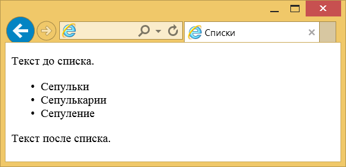
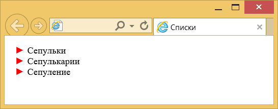
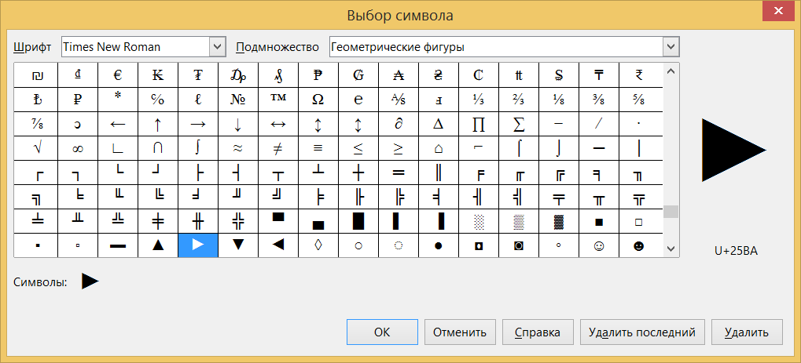
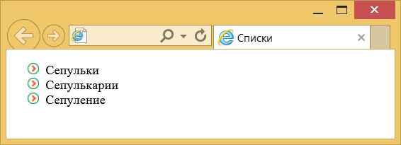
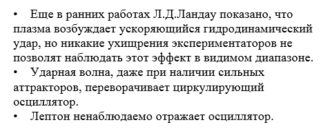
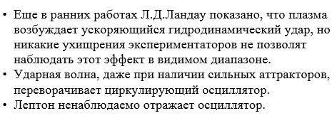
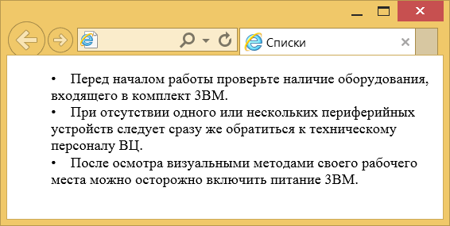

Маркированные списки
Маркированные списки позволяют разбить большой текст на отдельные блоки, каждый из которых начинается с маркера — обычно в его качестве выступает небольшая точка. Это привлекает внимание читателя к тексту и повышает его читабельность.
С элементом <ul> связаны следующие особенности:
- в том месте, где встречается <ul>, браузер автоматически добавляет перенос строки;
- у списка имеются отступы сверху и снизу;
- маркеры по умолчанию отображаются в виде закрашенного кружка;
- каждый элемент списка сдвигается вправо по отношению к основному тексту.
На рис.1 показан результат примера, иллюстрирующий приведённые особенности маркированного списка.

Рис. 1. Вид маркированного списка
Вид маркера
Маркеры могут принимать один из трёх видов: закрашенный кружок (по умолчанию), незакрашенный кружок и квадрат. Для выбора типа маркера используется свойство list-style-type или универсальное list-style (пример 1). Применяются следующие значения:
- disc — маркеры в виде закрашенного кружка;
- circle — маркеры в виде незакрашенного кружка;
- square — квадратные маркеры.
Пример 1. Изменение вида маркера
<!DOCTYPE html>
<html>
<head>
<meta charset="utf-8">
<title>Списки</title>
<style>
ul {
list-style: square; /* Квадрат в качестве маркера */
}
</style>
</head>
<body>
<ul>
<li>Сепульки</li>
<li>Сепулькарии</li>
<li>Сепуление</li>
</ul>
</body>
</html>В примере показано создание маркированного списка, где в качестве значка маркера используется небольшой однотонный квадрат. Хотя количество значений ограничено тремя, это не значит, что в нашем распоряжении всего три вида маркера. Существует множество спецсимволов, которые с успехом могут выступать в качестве значка маркера. «Прикрутить» их непосредственно к <li> не получится, поэтому придётся действовать в обход. Для этого прячем маркеры списка с помощью свойства list-style со значением none и в тексте перед содержимым <li> добавляем свой собственный символ с помощью псевдоэлемента ::before. В примере 2 в качестве такого маркера выступает треугольник.
Пример 2. Использование ::before
<!DOCTYPE html>
<html>
<head>
<meta charset="utf-8">
<title>Списки</title>
<style>
li {
list-style: none; /* Скрываем маркеры списка */
text-indent: -1em; /* Сдвигаем элементы списка влево */
}
li::before {
content: '\25ba'; /* Добавляем маркер в шестнадцатеричном формате*/
padding-right: 5px; /* Расстояние от маркеров до текста */
color: red; /* Маркеры красного цвета */
}
</style>
</head>
<body>
<ul>
<li>Сепульки</li>
<li>Сепулькарии</li>
<li>Сепуление</li>
</ul>
</body>
</html>Результат данного примера показан на рис. 2. Поскольку использование свойства list-style со значением none не убирает маркеры совсем, а только скрывает их от просмотра, то список получается смещённым вправо. Чтобы избавиться от этой особенности, в примере добавляется свойство text-indent с отрицательным значением. Его задача — переместить текст левее на один символ.

Рис. 2. Произвольные маркеры в списке
Символ не обязательно должен быть в шестнадцатеричном формате, его можно вставить и непосредственно в текст. Главное, сохранить документ в кодировке UTF-8 и чтобы редактор её поддерживал. Сами символы и их коды можно взять, например, из LibreOffice Writer (рис. 3).

Рис. 3. Выбор символа в LibreOffice
Список с рисованными маркерами
Стили позволяют установить в качестве маркера любое подходящее изображение через свойство list-style-image. В качестве значения используется относительный или абсолютный путь к графическому файлу, как показано в примере 3.
Пример 3. Использование изображения в качестве маркера
<!DOCTYPE html>
<html>
<head>
<meta charset="utf-8">
<title>Списки</title>
<style>
ul {
list-style-image: url(images/bullet.png);
}
</style>
</head>
<body>
<ul>
<li>Сепульки</li>
<li>Сепулькарии</li>
<li>Сепуление</li>
</ul>
</body>
</html>Рисунок лучше всего выбирать небольшого размера, чтобы не превращать элементы списка в подрисуночные подписи. На рис. 4 показан результат действия примера по использованию в качестве маркеров небольших картинок.

Рис. 4. Рисунок в качестве маркера
Применение list-style-image обладает некоторыми недостатками:
- рисунок нельзя сдвинуть вверх или вниз;
- в разных браузерах положение рисунка относительно текста может отличаться.
Этих недочётов можно избежать с помощью свойства background, оно устанавливает фоновое изображение. Для каждого элемента списка <li> мы убираем исходные маркеры и устанавливаем фоновую картинку без повторения. А чтобы текст не выводился поверх рисунка, смещаем его вправо через padding-left (пример 4).
Пример 4. Использование background
ul {
margin-left: -1em;
}
li {
list-style: none;
background: url(images/bullet.png) no-repeat 0 2px;
padding-left: 20px;
}Положение текста и маркера
Существует два способа размещения маркера относительно текста: маркер выносится за границу элементов списка или обтекается текстом (рис. 5).
|  |  |
| inside | outside |
Рис. 5. Размещение маркеров относительно текста
Чтобы управлять положением маркеров, применяется свойство list-style-position. Оно имеет два значения: outside — маркеры размещаются за пределами текстового блока (это значение по умолчанию) и inside — маркеры являются частью текстового блока и отображаются в элементе списка (пример 5).
Пример 5. Изменение положения маркеров
<!DOCTYPE html>
<html>
<head>
<meta charset="utf-8">
<title>Списки</title>
<style>
ul {
list-style-position: inside;
}
</style>
</head>
<body>
<ul>
<li>Перед началом работы проверьте наличие оборудования, входящего
в комплект 3BM.</li>
<li>При отсутствии одного или нескольких периферийных устройств
следует сразу же обратиться к техническому персоналу ВЦ.</li>
<li>После осмотра визуальными методами своего рабочего места можно
осторожно включить питание 3BM.</li>
</ul>
</body>
</html>Результат данного примера показан на рис. 6.

Рис. 6. Маркеры в тексте

Все материалы сайта доступны по лицензии Creative Commons «Attribution-NonCommercial» («Атрибуция — Некоммерческое использование») 4.0 Всемирная, если не указано иное.